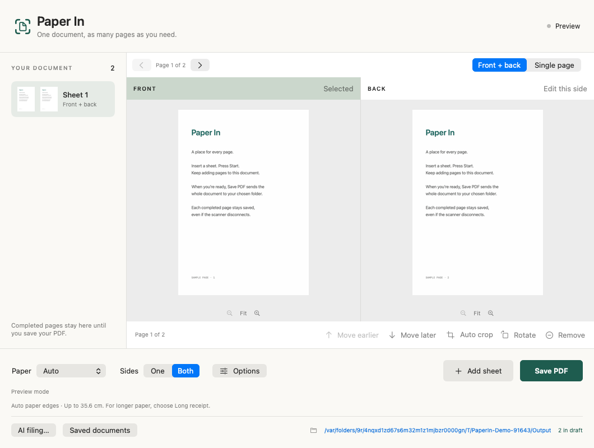

Put the paper in.
Hit Scan or press Space. See the front and back together. Add more sheets to the same document.
A SMALL MAC APP FOR YOUR PAPER PILE
The lease. The receipt. The thing you might need one day. Scan it, save it, and get on with your day.
v0.4.0 beta · Apple Silicon · macOS 14+
Signed & notarized.
Setup instructions.
A SCANNER APP THAT GETS TO THE POINT
No printer menus. No account needed to scan.
Just your paper, becoming a PDF.

The actual app, with generated sample pages. No mysterious “Scan_0047.pdf” energy.
THREE STEPS. THEN YOU'RE DONE.
Hit Scan or press Space. See the front and back together. Add more sheets to the same document.
Review, rotate, trim, or remove a page. Your draft survives a restart. Save when you're ready.
Choose a parent folder. Optional AI reads the PDF, suggests a useful name, and checks where it belongs.
YOUR PAPER. YOUR CALL.
Clear matches can be filed automatically. Uncertain results wait for you. Originals are kept, and related documents are never silently merged.
How AI filing worksIllustrative filenames. You decide the folder structure.
LET'S GET YOUR DESK BACK
Free to use. Open source. Built for Apple Silicon Macs and the Brother DS-940DW.
Download the DMG
macOS 14+ · Node and provider runtimes included
Release notes & checksum ↗
A FEW THINGS TO KNOW
No. Scanning and saving PDFs work without an account. AI filing is optional. Use your existing official Claude or Codex runtime login where supported, or an OpenAI or Anthropic API key. Account eligibility and provider terms apply; API billing is separate. Provider setup.
Support is currently focused on the Brother DS-940DW over USB. Wi-Fi is experimental. Other models and Intel Macs are not verified yet. The code is designed so more scanners can be added.
There are paper modes for A4, Auto and long receipts, plus optional blank-page skipping. These features are still being calibrated. Faint text, folds and print-through can need manual review. Original images are retained, and skipped pages can be restored before saving.
No. Paper In is an independent, MIT-licensed community project built by Kelly Gold, with Codex. Brother does not make or endorse it. Found something to improve? Open an issue or send a pull request.